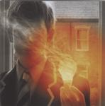

| Artist: | Porcupine Tree |
| Title: | Lightbulb Sun |
| Label: | K Scope SMACD827 |
| Length(s): | 56 minutes |
| Year(s) of release: | 2000 |
| Month of review: | [01/2001] |
| 1) | Lightbulb Sun | 5.31 |
| 2) | How Is Your Life Today? | 2.46 |
| 3) | Four Chords That Made A Million | 3.36 |
| 4) | Shesmovedon | 5.13 |
| 5) | Last Chance To Evacuate Planet Earth Before It Is Recycled | 4.48 |
| 6) | The Rest Will Flow | 3.14 |
| 7) | Hatesong | 8.26 |
| 8) | Where Would We Be | 4.12 |
| 9) | Russia On Ice | 13.03 |
| 10) | Feel So Low | 5.18 |
We continue with a moody waltz in How Is Your Life Today? A good vocal melody and a somber atmosphere make this short track an appealing one. The vocals are a bit like those of Hogarth. The electric guitars return in the percussive Four Chords That Made A Million. The music has a world music sheen, but the vocal parts are quite catchy. The music sounds as a cross of Britpop, Hawkwind with world music influences thrown in.
Shesmovedon is best characterized by the vocal harmonies in the track and the sometimes popping up drearied vocals of Wilson. The song does have it sharp and noisy guitar solo getting rather intense, but I do still feel the slow movingness of the track is still intact. I feel a ressemblance to Marillion's Now She'll Never Know although that track is much more fragile.
Last Chance To Evacuate Planet Earth Before It Is Recycled is again largely dominated in the sound by an acoustic guitar. To enhance the mood some keyboards sounds are injected by Richard Barbieri. A languid track that continues to be rather vague. Maybe the message here is more important than the music. As a rest point in the music it performs well.
The Rest Will Flow opens again with acoustic guitar. A small pop song with some brimming organ and an upping of the pace. This is one of the tracks where I guess is where the Britpop references come from. The song does have a small string orchestra figuring upon it.
Of course, being the people we are, we are more interested in anything "progressive" the band might have done on this record. Hatesong I guess is a first example of this. A plodding rhythm, the alternation between the soft and moody verses and the more active choruses. In the chorus they remind me of Parallel Or 90 Degrees (I guess you should read that vice versa). Then we get a strong tense build-up on the guitar.
Where Would We Be is a melancholy track in which the strumming acoustic guitar is sprinkled with atmospherics to obtain again a slow moving track, with some sharp noisy guitar work. Still very melodic though.
Russia On Ice is with over 13 minutes by far the longest track on this album. A very slow build up brings us back to the times of the Sky Moves Sideways. A track that comes to an inescapable chaotic conclusion after reaching into the depths of depression. The string orchestra makes its reappearance. A great track with strong riffs and eerie synth sounds. Not a happy track, but I guess none of the tracks here deserve that label. The track has a strong percussive component and ends with church bells.
The closer of the album is Feel So Low, the repetive opening of which sounds again quite depressed. A dreamy track where the melancholy atmosphere is underwritten by the string orchestra. Again a song that is more mood than anything else, although the vocal melody is subtle enough. On the whole though I consider it one of the weakest tracks.